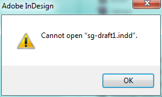

Cannot open InDesign CS6 file¶
When you’re dealing with complex .indd files or a shared layout, many things can go wrong that can prevent you from accessing your Adobe file.
In Windows, if you find yourself unable to open an InDesign file using InDesign CS6, try opening the file as a copy instead.
To open an InDesign file as a copy:
Click File > Open then navigate to the InDesign file.
Select Copy under Open As, and then click Open.